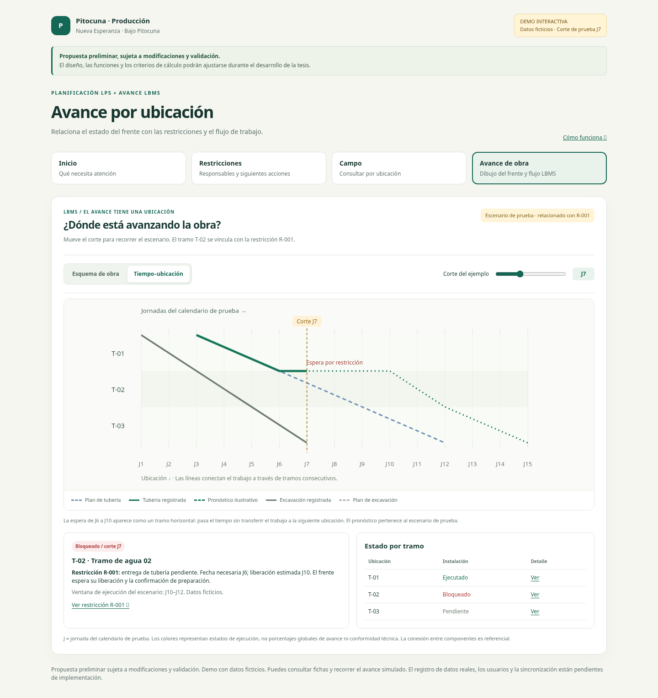

Ubica el trabajo
Relaciona cada actividad con su tramo, componente o UBS y revisa lo previsto para las próximas semanas.
Propuesta preliminar, sujeta a modificaciones y validación. El diseño y las funciones podrán ajustarse durante el desarrollo de la tesis.
Identifica qué bloquea el trabajo, coordina su liberación y mira cómo avanza cada ubicación de la obra.
Propuesta para saneamiento rural · Caso Bajo Pitocuna
Un proceso sencillo para quien planifica y para quien registra en campo.
Relaciona cada actividad con su tramo, componente o UBS y revisa lo previsto para las próximas semanas.
Registra la restricción, asigna un responsable y una fecha. Confirma su liberación con evidencia.
Registra lo ejecutado, revisa los compromisos semanales y ubica las esperas en el flujo de la obra.
Un esquema para entender dónde ocurre el trabajo. Un gráfico tiempo–ubicación para revisar su continuidad.

Explorar el avance en la aplicación →
Espacio definido para el esquema real de obra y el avance por UBS. La geometría y los estados actuales pertenecen únicamente a un escenario de demostración.
Una pantalla inicial clara, con acceso al detalle cuando haga falta.
Qué preparar, quién lo atiende y cuándo se necesita.
Dónde se ejecuta el trabajo y dónde se interrumpe.
PPC y liberación a tiempo, vinculados a sus registros.
Vista móvil; captura local y sincronización previstas para el prototipo.
Explora las vistas de planificación, restricciones, campo y avance.